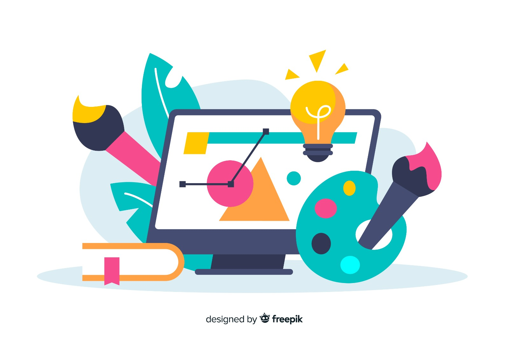
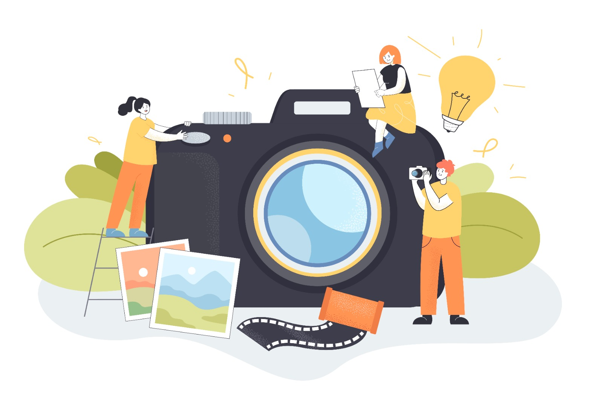

personal SKILLS
My skills span several creative fields: expression through acting, visual creation in graphic design, capturing moments in photography, and video editing to tell stories seamlessly. These disciplines complement and enrich every project I undertake.

Graphics Designing

Acting
